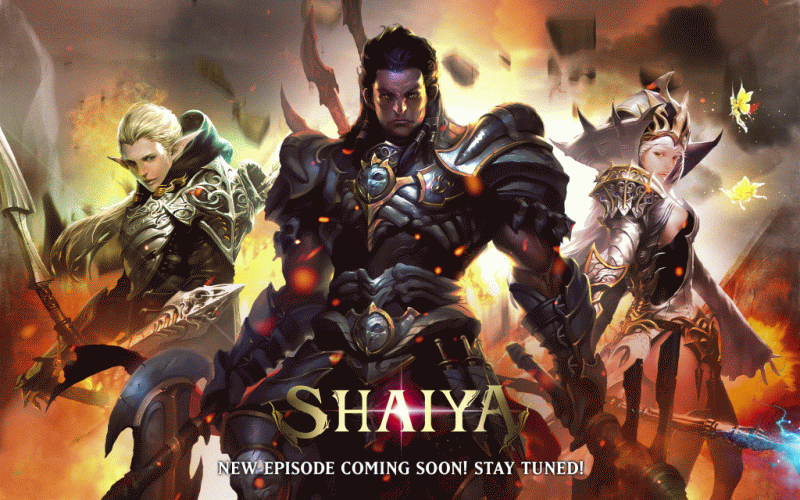

Shaiya, um mundo virtual que não apenas me cativou, mas se tornou o catalisador de uma paixão duradoura pelos jogos eletrônicos. Ao dar os primeiros passos naquele universo repleto de fantasia e aventura, mal sabia eu que estava prestes a embarcar em uma jornada que mudaria minha visão sobre os jogos para sempre.
Shaiya não foi apenas um jogo; foi o primeiro jogo que me envolveu por completo, desvendando suas vastas terras, seus heróis e suas batalhas épicas. Cada momento passado naquele mundo virtual foi como uma imersão em um reino de emoções, desafios e camaradagem.
Desde os primeiros instantes, fui envolvido por uma narrativa rica e uma jogabilidade envolvente. Cada missão cumprida, cada inimigo derrotado e cada novo nível alcançado alimentavam minha fascinação por este universo digital.
Foi através de Shaiya que experimentei a verdadeira conexão entre um jogador e um jogo. As amizades construídas, as guildas formadas e as batalhas travadas lado a lado fortaleceram não apenas minha jornada no jogo, mas também a maneira como eu via o mundo dos jogos eletrônicos.
Aquela paixão inicial por Shaiya não apenas me proporcionou incontáveis horas de entretenimento, mas também moldou minha apreciação e amor pelos jogos eletrônicos. O jogo marcou não apenas o início de uma história dentro de seus reinos virtuais, mas também o despertar de uma paixão que perdura até os dias atuais.
Lembranças
Shaiya foi mais do que um simples jogo; foi a chama que acendeu minha paixão pelo mundo dos jogos eletrônicos, marcando o início de uma jornada que eu sempre guardarei com carinho e nostalgia.